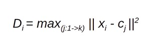

Objective function
The primary goal of the K-Means algorithm is to minimize the within-cluster variance, which is the sum of squared distances between each data point and its assigned cluster's centroid. This objective function is expressed as:

Dᵢ: This represents the maximum distance for a specific data point i. In other words, it's the distance between data point i and the farthest centroid among all K centroids.
max(j:1->k): This indicates that we are finding the maximum value across all possible values of j, where j ranges from 1 to k (the number of clusters). In essence, we are comparing the distances between data point i and each of the K centroids and selecting the largest distance.
||Xᵢ - Cⱼ||²: This is the squared Euclidean distance between data point Xᵢ and centroid Cⱼ. The Euclidean distance is a common metric for measuring the distance between two points in a multi-dimensional space.
Convergence Criteria
The K-Means algorithm iteratively refines the cluster assignments and centroids until it reaches a state of convergence. Convergence is achieved when one of the following criteria is met:
1. Centroid Stability
The algorithm terminates when the centroids do not change significantly between consecutive changes. This can be quantified by setting a threshold for the change in centroids. If the change is less than the threshold, the algorithm stops.
2. Maximum Iterations
A predefined maximum number of iterations is reached. This prevents the algorithm from running indefinitely and ensures termination even if the centroids haven't fully stabilized. This is useful to prevent excessive computation time in cases where convergence is slow.
3. Change in Objective Function
The algorithm can also stop when the improvement in the objective function falls below a certain threshold. This suggests that the algorithm is no longer making substantial progress in minimizing the objective function, indicating that the clusters are optimally partitioned.